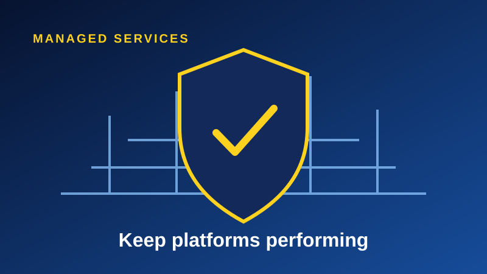

A platform is most exposed in the months after launch. Usage grows, issues surface and the project team moves on. Without clear operations, early gains erode.
Monitor and respond
Platform monitoring, a service desk and SLA reporting turn problems into managed incidents with clear owners and timelines.
Transfer skills deliberately
Good managed services build your internal capability through training and documentation, so you are not dependent on a vendor forever.
Optimise continuously
Regular reviews find performance gains, cost savings and new use cases, keeping the platform aligned with the business.
The bottom line
Treat operations as part of the project from the first workshop, and the platform will keep delivering long after launch.